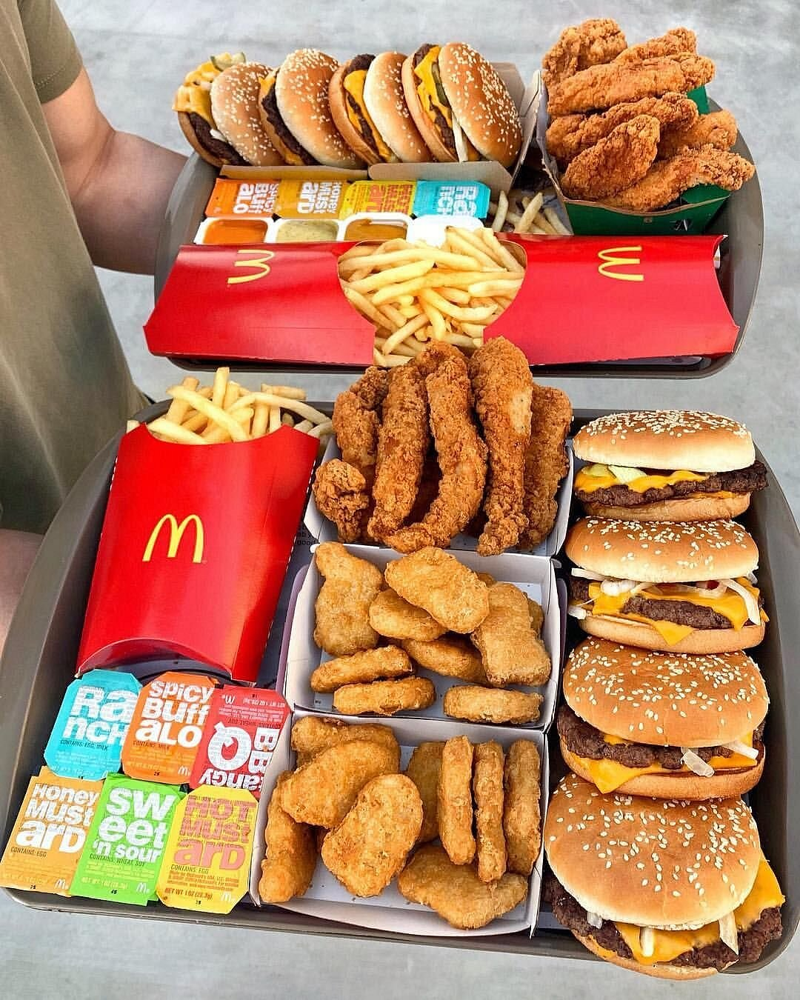

Ciao ecco la mia prima pagina
Io sono Thomas Addamo e inizio a studiare HTML
-
Chi ha inventato questo linguaggio?
HTML HTML è stato creato da Tim Berners-Lee.
-
Quando?
È stato inventato nel 1991.
-
Quali sono gli scopi di questo linguaggio?
HTML serve a strutturare e formattare contenuti sul Web, permettendo la creazione di pagine web interattive e multimediali.
-
Che cos'è il WEB?
Il Web, o World Wide Web, è un sistema di documenti ipertestuali accessibili tramite Internet, che consente agli utenti di navigare tra pagine tramite link.
-
Che problemi risolveva il WEB?
Il Web ha risolto la necessità di condividere informazioni in modo rapido e accessibile, facilitando la comunicazione e la collaborazione tra persone e organizzazioni in tutto il mondo.
-
Che differenza c'è tra web, HTML e Internet?
- Web: è un sistema di informazioni accessibili su Internet tramite browser, che utilizza HTML per presentare i contenuti.
- HTML: è un linguaggio di markup utilizzato per creare e formattare pagine web.
- Internet: è una rete globale di computer interconnessi che consente la trasmissione di dati.
Ecco le mie 5 pagine preferite
Ecco la mia foto
Sono Thomas Addamo e ho creato questa pagina per il corso TPSIT nell'Istituto Maxwell di Nichelino. Mi piace tanto mangiare.

Ecco una foto di quello che di solito mangio
